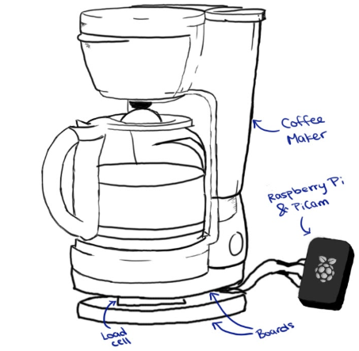
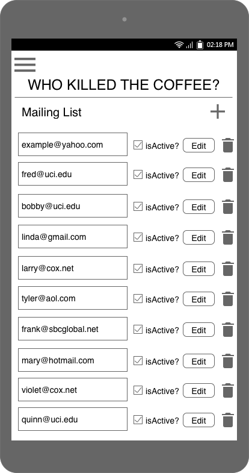
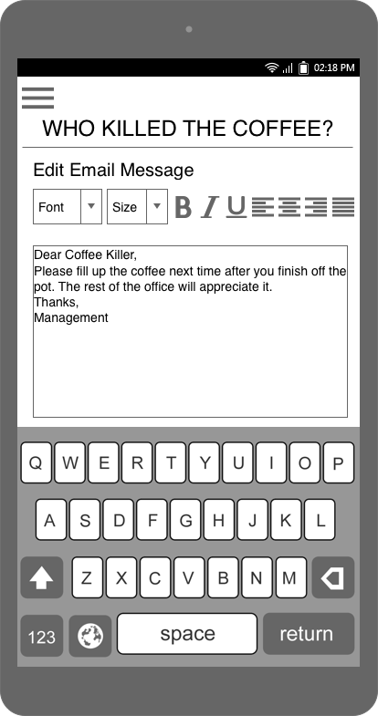
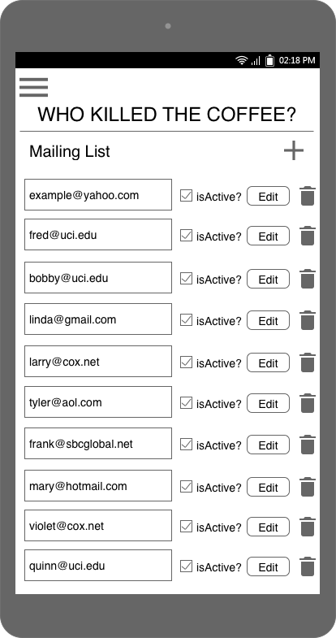
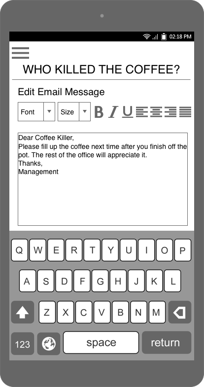

Project in Ubiquitous Computing (2018 - 10 weeks)
About the project
The project consisted of designing, developing, and implementing our own Internet of Things technology. For the project, we identified a problem and designed a device with the intention of eliminating or reducing that problem. In this case, the problem consisted of empty coffee pots in a communal setting and the solution, a reminder-based, internet-connected coffee pot.
A common issue, especially in office settings, is someone killing a communal pot of coffee and not brewing a new pot. In other words, an empty coffee pot when there should always be coffee readily available. The issues are addressed with the creation of a “smart” coffee maker. People can get very frustrated when they go to get a cup of coffee only to find that it’s empty. Most coffee pot users are not actively aware that their cup may be the last. Whoever killed the coffee pot wouldn’t want anyone to know they did it because it would frustrate and upset the other coffee drinkers. We determined that shaming and raising public awareness is the best way to deter someone from not brewing a new pot of coffee after finishing the previous pot. Our solution to this problem was to create a device that takes a picture of the coffee maker user and emails the photo to their coworkers. The interface would allow for custom mailing lists and messages that are sent out when someone kills the coffee. The coffee pot gives the user time to refill the coffee pot before taking their picture and sending it out to people on the mailing list. The goal of our “smart” coffee maker is to shame the user if they don’t brew a new pot of coffee by letting all of their coworkers know that they are the ones who killed the pot.
The device
Our device features a coffee maker that sits atop two boards separated by a load cell. This allows for measurement of the weight of the carafe, which the attached Raspberry Pi receives. The attached Pi Cam, located next to the coffee maker, is tilted upwards at an optimal angle for taking a picture of the user. The boards under the coffee maker include bolts and washers to create space between the wood and the load cell to create a stable base and get an accurate reading.
The interface
 



How it works
Our coffee maker features a Raspberry Pi, a scale, and a camera. The Pi knows the weight of the carafe when the pot is empty. When a user removes the carafe, the device takes their photo. After taking the photo, a 90-second timer starts, giving the user a grace period to put the carafe back and/or brew a new pot of coffee. If the user puts the carafe back and the device detects, by weight, that the carafe is empty, the photo of the user is saved locally and emailed to a lists of email addresses along with a note to shame them for not making a new pot. Similarly, if the user does not put the carafe back or make a new pot in the 90-second grace period, their photo will also be emailed out along with a note to shame them for forgetting. If the user puts the carafe back and it still has (enough) coffee it in or if the user puts the empty carafe back and starts brewing a new pot, their photo is deleted and is not emailed.
Source code
Downloads
Source code: emailTo.py
Project documentation: Here